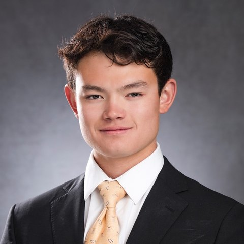
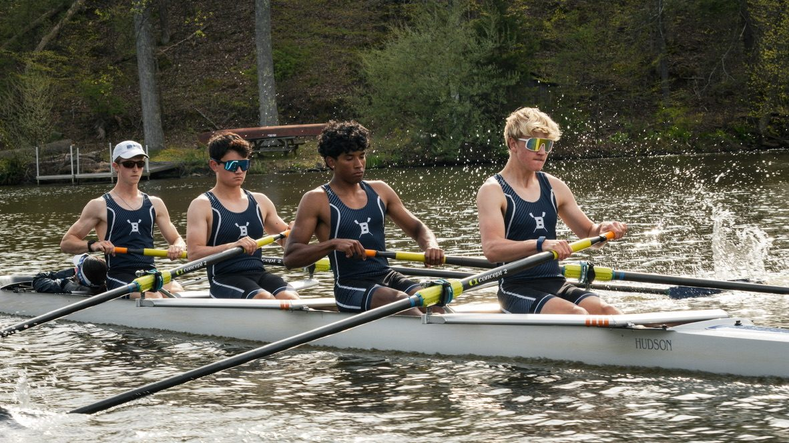
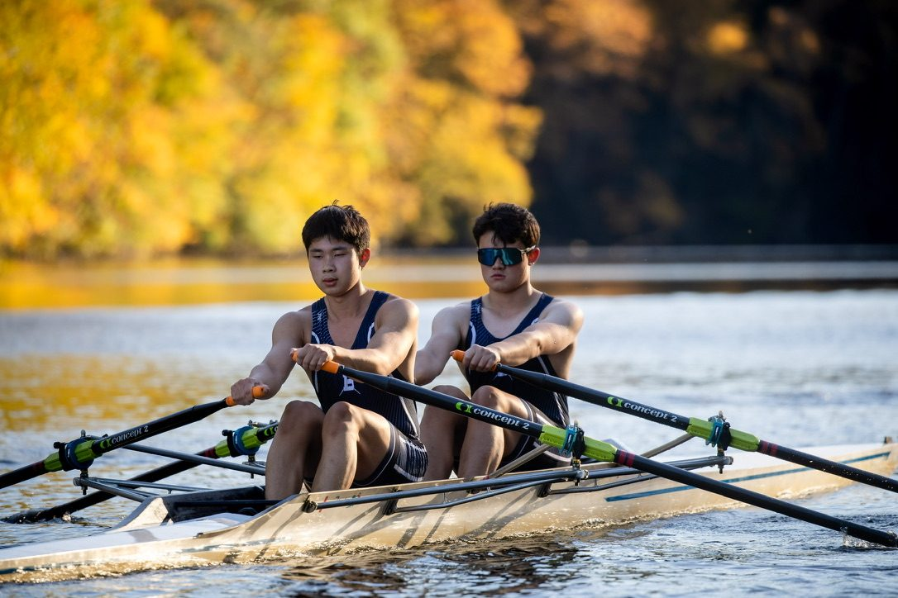
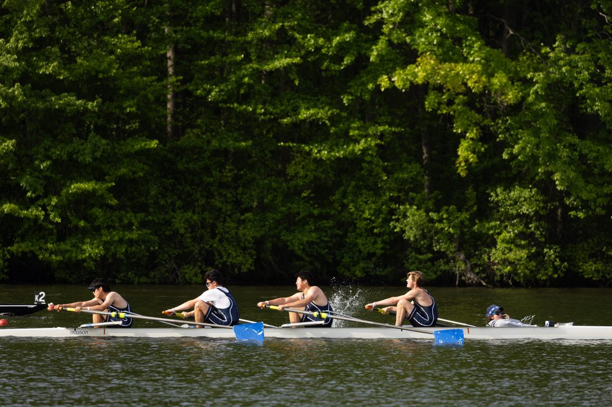

Hello, my name is
Brandon Wells
I study public policy at Cornell University, where my work centers on East Asia, international relations, and diplomacy.
I was born in Tokyo and grew up across Asia, spending fourteen years abroad, eight in China and six in Japan. That upbringing left me native in Mandarin and functional in Japanese, and it shaped how I read the region: not as a set of talking points, but as places I have actually lived. My interest in policy grows directly out of that experience, and out of a conviction that the relationship between the United States and East Asia will define much of this century.
At Cornell I focus on the machinery of foreign policy and the institutions that carry it out. This fall I am in Washington through Cornell in Washington, studying Congress up close, including a seminar on legislative strategy taught by former Representative Steve Israel. Alongside my coursework I am pursuing self-directed study in alternative investments as a CAIA Level I candidate, on the view that capital and statecraft are harder to separate than most curricula admit.
Away from policy I keep an interest that predates the rest: history. I run a YouTube channel on the Edo period, where I try to make two and a half centuries of Japanese life legible to people who have never opened a history book about it. I also row, and I trained in kendo for years; both reward patience far more than talent.
I am always glad to meet people working on the Pacific, on diplomacy, or on the odder corners of Japanese history.
A few snapshots from the road so far.



Experience.
-
Fellow
Asia Society Japan Center, Tokyo
Coordinated seven events, drafted outreach materials, and worked alongside diplomats and senior officials. Presented remarks at a QUAD conference on behalf of senior officials, ambassadors, and Japanese academics.
-
Secretary-General and Head Delegate
Blair Academy Model United Nations
The youngest Secretary-General the program has elected. Founded and directed Blair Academy's first Model UN conference.
-
Crew Captain
Blair Academy Men's Rowing
Elected captain in my senior year and led the team to a gold medal at the Mid-Atlantic Regionals, rowing in singles, fours, and eights.
-
Founder and President
Blaircast, the Blair Academy podcasting club
Produced ten episodes and interviews across four platforms and brought in more than twenty guests.
Recognition.
-
Go Big or Go Home Award, 2024
UCLA Summer Institute, Economics
Awarded to the top student in a college-level economics course.
-
Best Delegate (2024) and Outstanding Delegate (2025)
UNIS Model United Nations
Recognized in the UNESCO committee and the U.S. Cabinet committee.
-
Honorable Mention, 2024
University of Virginia Model United Nations
Top three delegate in a national specialized committee.
- Honorable Mention ILMUNC XLII, Ivy League Model United Nations Conference
- George Eastman Young Leaders Award University of Rochester
- Selena and James Howard Prize Blair Academy
-
Sculling Trophy
Blair Academy Rowing
Awarded for exceptional sportsmanship and leadership.
-
Inaugural Junior Portfolio of Distinction
Blair Academy
One of six students selected for symposium recognition.
-
Senior Chapel Talk Speaker
Blair Academy
Selected to deliver a school-wide address, on curiosity as a guiding principle. Watch the talk.
Background.
- Languages
- Mandarin (native), Japanese (working)
- Study
- Public policy, Cornell University
- Credential in progress
- CAIA Level I candidate
- Certified
- Lifeguard, CPR / AED, First Aid
- Secondary school
- Blair Academy, 2026
- Lived
- China, Japan, United States